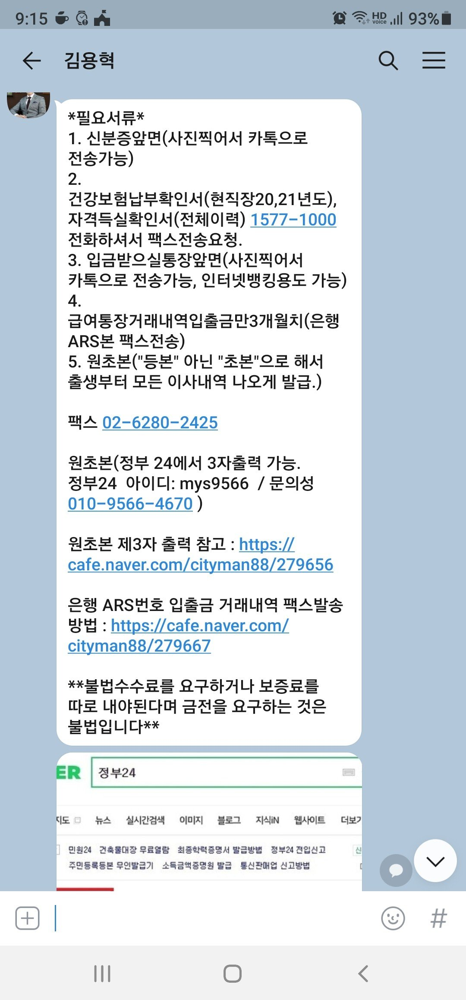

[직장인대출] 추가자금 대출 후기
작년 이맘 때 쯤 밴크앤론 김용혁 이사님께 받고 1년 지나서 대환과 동시에 추가 자금을 받기 위해서 다시 상담 드렸네요.입사 한지는 4년째인데 사대보험이 안되었는지라 올해 1월부터 정규직으로 4대 보험을 납부하게 되어 이율이 낮은 곳으로 같아탈 수 있을려나 했어요...하지만 4개월은 넘 짧았나봐요..대환은 어려웠고 추가자금만 신속하게 받을 수 있었네요...정말 순삭이었네요.신용점수가 600점 후반이었구 이율은 좀 높았지만 820만원을 뱓았네요.서류는 스크래핑으로 빠른처리가 되었네요.김용혁 이사님 신경 써주셔서 감사하네요...6개월 뒤나 다시 1년뒤에 상담드리겠습니다..낮은 이율로 꼭 갈아타게 도와주세요...
